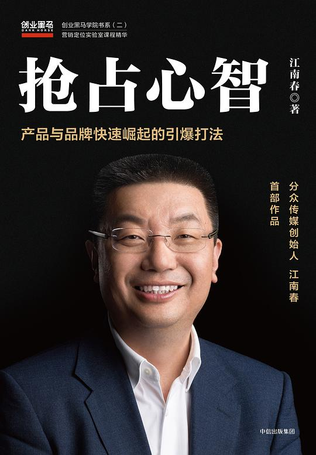

|  |
抢占心智：产品与品牌快速崛起的引爆打法 |
推荐序 我们向江南春学什么
除了黑马营的每期讲课，江南春还有两个重要的黑马身份，一个是黑马会的会长（从2015年起）。当年我带着十几位黑马优秀学员，一起去上海拜访江总，邀请他担任黑马会会长。江总请大家吃了一顿饭，席间提出了一个要求，他希望黑马会能成为中国第一大创业社群，成为拥有十万会员以上的创业社群，希望黑马能举办万人规模的黑马大课，希望黑马变成一个百亿规模基金的创投平台。他开玩笑说，如果让他当黑马会会长，老牛和这些黑马副会长必须要有这样的社群雄心。那顿饭，大家吃得激情洋溢。江总出任了黑马会会长，黑马也从那时起开始了自己的快速发展。很惭愧，到今天江总提出的目标还没有完全达成，但基于庞大的黑马社群，创业黑马公司在2017年登陆创业板，成为中国创业服务领域的第一股。我相信，黑马明星会长们和我一样，还会为江总提出的使命继续奋斗。
自序 与显而易见的真理反向走
我们顺着这个思路开始了之后的实践。2003年分众传媒成立，并在2005年7月成功登陆美国纳斯达克，成为第一家在美国上市的中国广告传媒公司；2007年，分众入选纳斯达克100指数；2015年，分众回归A股，市值过千亿元，成为中国传媒第一股；2017年，分众实现全年营收120亿元；2018年，分众市值突破1800亿元，入选中国大陆民营上市公司市值20强。
我每年都会接触大量的企业案例。我认为中国企业凡是成功的，一定是找到了差异化定位，同时抓住了时间窗口，采用饱和攻击，占据了心智优势，引爆了主流人群。
第1章 打造企业的护城河
无论对于企业还是产品，定位都是最核心的问题。定位不光要了解市场，更要了解用户、了解自己。只有拥有明确的目标、与众不同的思考，才能够在如今的时代中脱颖而出，无往不利。
差异化定位：与显而易见的真理反向走
创业是时下中国的一大潮流，在我看来，创业要想成功，就在于能否简单说出你的差异化，找到容易表达的竞争优势。简而言之，就是一句话说出让用户选择你而非选择别人的理由。
人生应该以服务为目的，而赚钱只是结果——这是我的座右铭，同时也是我为自己定下的目标。我觉得每个人都应该想着去为社会创造一些价值、为用户创造价值，这是最基本的一点。但是，就连我自己也常常会在这条路上走偏，这时候如何重新回到正轨，找到自己的定位就变得十分重要了。
我对于定位的大部分认知，来源于2002年读到的美国营销大师艾·里斯与杰克·特劳特所创作的《定位》一书。正是这本书，让我得以触摸营销史上最为著名的定位理论。在接触到《定位》一书后，我感觉自己仿佛触碰到了一扇崭新的大门，书中的很多观点都和自己心中的想法不谋而合。但不同的是，在此之前我并没有将这些散落在脑海中的感触进行系统的思考，并整理出完整的方法论，而《定位》无疑帮助我解决了这个问题，并且给了我更多的感触。事实上，特劳特先生的“与显而易见的真理反向走”，就是所谓的“差异化定位”。
创业是时下中国的一大潮流，在我看来，创业要想成功，就在于能否简单说出你的差异化，找到容易表达的竞争优势。简而言之，就是一句话说出让用户选择你而非选择别人的理由。
以手机行业为例，在苹果一家独大的市场格局下， OPPO手机的差异化是“拍照很好的手机”， vivo手机的差异化是“音乐手机”，金立手机是“超级续航手机”，小米手机是“性价比很高的手机”，而华为手机说自己是“商务手机”。
与之形成明显反差的是联想。联想手机经常说自己有三大优势和七大卖点，但在我看来所谓三大优势就等于没有优势。虽然联想手机确实存在优势，但是如果不能将其用精辟的语言表达出来，就无法像利剑那样直击消费者心智。事实重要吗？重要，但是认知才是真正的事实。
孔子曰：温故而知新，商业理论同样如此。我习惯在闲暇时间将脑海中的固有理论进行梳理。神奇的是，同样的理论在不同阶段进行温习，都会给我全新的感受。从一开始的凡事一律特立独行、不走寻常路，到总结出一套完全属于自己的商业世界观、价值观，每一次的积累都让我兴奋不已。其实，这也同样是分众传媒从创立到逐渐壮大的心路历程。在分众人眼中，如果说在央视的黄金时段打广告，能够让10亿人看3遍，那我们想做的就是让1亿人看30遍。
其实，所谓的差异化定位是一种方法，而不是一种叛逆的态度，并不是说凡事都要逆势而为才能够取得成功。对于我而言，成功的定位营销是要找到一个新的角度，开辟一个新的领域，在一片没有人经过的荒野中走出一条新的道路。这也正是分众的理念和存在的意义。在中国商业这片日益激烈的战场上，只有时刻保持创新的思维，才能生存下去。
比如在其他人都将全部精力放在内容上时，我们却选择了做渠道。这不是孤注一掷的莽夫行为，而是深思熟虑的创新想法，后续的结果也证明了分众当年决定的正确。
我们还发现了另一个当时广告业主非常在意的广告点：地理位置。仿佛户外广告就必须在上海徐家汇、北京国贸等繁华商业区占据最显著的位置。但是，当我们在2002年想去做户外广告的时候才发现，徐家汇的广告已经被塞满了，那些黄金位置早就已经被别人占据了，这让我们看上去无路可走。
这时，我们自然又想到了“与显而易见的真理反向走”这句话。我们不再坐在那里去观察一个地理位置的好坏，即放弃了从地理位置解决问题，而选择了从人的角度出发进行思考。因为所有人的生活都有一定的规律和轨迹，所以我们就在想能不能利用这些规律和轨迹，让广告和人们频繁相遇。于是，电梯的创意诞生了。
我觉得我们找到了一个核心场景，这个核心场景每个人都必须经过——公寓楼和写字楼的电梯口。在这个核心场景当中，诞生了各种各样的消费决策。阿里巴巴、京东等电商平台的数据显示，中国绝大多数的电商流水产生于早上10点、下午3点和晚上9点这三个时段。这三个时段说明了什么？说明大家早上9点钟到了办公室，回完邮件之后开始买东西；下午2点左右回到办公室之后，3点开始买东西；晚上回到家七八点钟洗完澡之后躺在床上，九十点钟又开始买东西。
在得出这个结论之后，你会发现中国人最核心的消费决策，都发生在公寓楼和写字楼。无论消费者在上下班的路上做什么，他们都很难做出真正的购物决策，只有回到家或办公室这个他们无比熟悉的环境中，才能真正做出付钱消费的决定。这是一条全新的道路，我们将目光放在了消费者决策的核心场景上。不管是在分众创立之初，还是如今移动互联网的下半场，这条全新的道路都让我们集中引爆了中国两亿都市主流消费群。
可以说，差异化定位给了分众传媒很大的帮助，而我们也因此进行了很好的实践。分众创立短短两年之后，便在2005年成功登陆了美国纳斯达克证券交易市场，成为第一家在美国上市的中国广告传媒公司。
在分众走过的这十几年中，大部分时间我们都是只以电梯媒体为主营业务，后面我们还做了影院媒体。如今，我们已经覆盖了150万个电梯媒体终端。分众过去的平均增速达到了56%，一共有5400多个客户，而最近几年，我们已经开始在有效地收缩客户了。
用户认知是企业的终极战场
其实，如果我们回顾中国改革开放之后的商业历程就会发现，商战的核心要素早已发生了翻天覆地的变化。定位理论将竞争划分为三个维度：产品、渠道和心智。根据这三个维度，我将改革开放之后的企业竞争划分为以下三个时代浪潮。
产品为王时代
在改革开放后的第一个10年里，商战的核心要素是生产端。中国第一批富起来的人基本都集中于广东，当时的中国首富也出自广东，原因何在？当时中国市场处于严重的商品短缺状态，只要有货就不愁卖，广东商人最厉害的地方在于他们通过“三来一补”（即来料加工、来样加工、来件装配和补偿贸易，中国在改革开放初期尝试性地创立的一种企业贸易形式。），将生产端的优势牢牢握在了手中，开中国制造之先河。那时候谁能接到单谁就能赚钱，不用担心生产不出来，即使只有1万吨的产能，接10万吨的单也没有一点问题，马上可以层层分包出去。
渠道为王时代
15年之后，浙江人接掌了首富宝座。彼时企业竞争的维度已经从生产端转到了渠道端，只要你能够把渠道做深做透，做到每一个“毛细血管”，你就能赢得商战。渠道为王的说法由此而生。
渠道为王的时代有两家典型企业——娃哈哈和乐百氏。乐百氏花了很多钱请国际营销服务机构对其进行包括广告在内的整体包装，却在渠道上输给了娃哈哈。娃哈哈建立了供销联合体，与经销商分享利益，把产品迅速卖到千家万户，延伸到每一个零售终端。因此，娃哈哈那时不管卖什么都能迅速上量，就连非常可乐这样的产品，在其渠道强力推动之下，一年也能卖到70亿元。
可惜好景不长，一个新的时代很快来临。越来越多的消费者通过美国的文化输出，了解到可口可乐才是正宗的可乐，在心智上完成了预设，只等着可口可乐进入中国市场。不久，可口可乐和百事可乐接连进入中国，并在很短的时间内完成了渠道下沉。一个有趣的现象就此而生——可口可乐和百事可乐的渠道下沉到哪里，非常可乐就从哪里消失。很快，非常可乐从一年销售70个亿的体量，萎缩到只有几个亿。
定位为王时代
时至今日，天猫、京东等公司应运而生，在移动互联网、大数据和人工智能技术的支持下，它们重构了渠道结构。无论你想在网上买哪个品牌的哪件产品，最后买不到的可能性基本为零，渠道端的传统优势被此起彼伏的互联网浪潮慢慢消解。事实上，当今的消费者在选择任意一种产品时，都会面对很多的提供者。那么，在同质化现象普遍存在的过剩经济时代，什么才是商战的核心要素呢？答案显而易见：差异化。每个品牌都必须回答一个问题：你如何简单地说出产品的差异化，说出让消费者选择你的产品而不选择其他品牌的理由。
“缓解轻度疲劳和饥饿的饮料”是君智咨询公司的谢伟山老师为香飘飘品牌重新制定的独特定位。“小饿小困喝点香飘飘”这句广告词帮香飘飘开创了很多场景。因为饥饿和疲乏是每个人都会产生的感觉，无论是工作、熬夜还是看球时，甚至是午餐后都很容易出现。因此，当香飘飘奶茶与这些场景结合在一起时，销售量自然会开始攀升。“采用新西兰奶源·印度红茶”、“一年12亿人次在喝”等定位，也会增加消费者对产品的信任与依赖，提升用户黏性。
占领用户的心智是一场硬仗，“没有中间商赚差价”的瓜子二手车，就是与那些线下二手车交易市场、4S店中间商打擂台。而这句广告语颇有些“打土豪分田地”的味道，足以挑动起用户的心智力量。以弱胜强最大的特点不是你有多强，而是你能挑起多少消费者的心智。当你陷入人民战争的汪洋大海时，战争就已经结束了。道就是人心，就是互用的心智力量，这是如今这个时代最为重要的事情。
品牌是一切战略的核心
用户认知决定了企业的盈利能力。在一个有着巨大容量的行业里，全行业的利润就集中在少数有品牌的企业上。绝大多数的品牌不挣钱，90%的企业都是在毁灭价值。市场调研公司Counterpoint Research发布的最新报告显示，2017年第三季度，苹果公司在每部iPhone手机上的利润为151美元，利润率虽然从2016年同期的86%下滑至60%，但依旧控制着智能手机行业超过一半以上的利润。IBM（国际商业机器公司）在鼎盛时期占据了主机行业95%的利润。阿里巴巴也许占了超过全球电商零售行业利润的100%，因为其他电商加起来都是亏损的，至少在中国如此。
作为一个不能创造顾客、不会被顾客在心智中优先选择、无法实现预售的品牌，无疑会被渠道盘剥得很惨，要交诸如进店费、条码费、上架费、堆头费等各种费用，这便意味着一个新的品牌已经很难在传统渠道里诞生，现实就是这么残酷。
雅迪电动车在与爱玛电动车竞争时，最初走的也是价格战的路子。雅迪相较爱玛的规模更大，拥有比较明显的成本优势，能将电动车的价格控制在2000元左右，具有较高的性价比。但是好景不长，很快爱玛也推出了2000元价位的电动车，并且每年促销两次，这给雅迪造成了很大的竞争压力。
很多品牌在遭遇价格战时的第一反应是降价，与竞争对手血拼到底。雅迪却反其道而行之，彻底放弃了价格战和规模战，选择做更高端的电动车，直接将产品的单价提升到3500元。这次变招，让雅迪赢得了巨大的成功，每年的净利润达到5亿~7亿元，不久后便在香港上市。
雅迪为什么会赢得胜利呢？特劳特先生曾经讲过一个非常重要的观点：对付价格战最好的方法是涨价。一旦将产品的价格提升，会在消费者心智中形成“高端高质”的品牌标签，而价格上调带来的毛利资源，能够为品牌带来更好的工艺和技术，赢得更好的经销商渠道和广告机会，继而坐实“高端高质”的用户认知，形成正向循环。
做透细分市场是做好品牌的关键
我经常说，想要在中国将品牌做好，就一定要细分市场，将其做得足够透才行。最不可取的就是像撒稻米一样，撒完以后却什么都没有看到。想要成功就一定要聚焦、精准和“分众”。
以分众的细分市场为例。当初，为了精准找到分众的细分市场，分众颇下了一番功夫，这里我们重温一下这个过程。
确定突破方向
先和大家明确一个事实，在今天的中国，有两种人已经很少看电视——年轻人和有钱人。
在察觉年轻人的收视习惯发生改变、有钱人没有时间看电视之后，分众的想法也随之而变，分众开始考虑如何在一个细分市场中成为老大。央视毫无疑问是中国传媒领域的巨无霸，在分众初创时，央视的价值就已经超过了100亿元。即使是对于今天的分众来说，也依旧无法与央视正面抗衡。所以，分众要想求生存谋发展，就要找到自己的路。
央视的收视高峰在晚上，广告的黄金时段也以晚上为主，那分众就做白天；央视主要针对的是家庭，那分众就去做家庭以外的市场；央视专门针对那些有时间看电视的用户，那分众就去和那些没有时间看电视的用户做主意。
确定用户人群
在明确了自己的市场定位之后，分众又思考应该如何确定自己的用户人群。中国有近14亿人口，如果将8亿农民排除在外，就只剩下5亿的城市受众，而如今绝大多数产品都是针对都市人群的。
岁月会让人形成习惯，也会让人变得越来越“固执”，而固执的人是不太可能被品牌影响的。所以，分众将目光主要集中在了20~50岁的人群中，这些人最有可能被品牌影响，同时又拥有足够的购买力。
于是，分众又将5亿城市受众中20岁以下的青少年和50岁以上的中老年人排除在外，剩下的是3亿20~50岁的人群。而在这3亿人中，月收入在3000元以上的又剩下多少呢？只有1.5亿。这1.5亿人虽然在人群当中只代表了中国人口的10%，但他们却占据了城市消费的70%。于是，分众将主要的客户群体定位为月收入3000元以上的城市人群。
确定呈现方式
对于城市主流消费人群来说，看电视是几乎不可能每天都发生的事情，但是每天上班和下班的人却非常多，电梯是他们最有可能出现的地方。在我十几年前创业的时候，中国最大的改变就是城市化，而城市化最基础的设施就是电梯。如果没有电梯，城市根本就无法正常运转。电梯是城市化的基础设施之一，它代表着4个词：主流人群、必经、高频和低干扰。这4个词正是今天引爆品牌最核心和最稀缺的资源。分众的电梯媒体分布于中国150个城市，拥有150万个终端，能够做到日均到达5亿人次城市主流人群。当今中国有5亿城市人口，每天就有2亿人能够看到分众的广告，5400个品牌因此选择分众。
成本考量
让定位回归常识
定位一定要回归常识，而常识就是消费者心智中已经存在的认知。现实世界只是表象，消费者心智中的认知才是真正的现实。定位要顺应消费者心智。认知和常识很难改变，要善于利用常识去建立定位。分众就是这样做的。
定位理论利用的是消费者的常识，是消费者原有的认知。什么是常识，常识就是普通消费者认为其他奶源带比黑龙江好。在这样的常识下，飞鹤注定无法与四大国际品牌争锋。要想翻盘，只能反其道而行之。我们为飞鹤奶粉准备的方法是关联定位——“ 更适合中国宝宝体质的奶粉”。
再举个例子，有很多消费者都认为人参、燕窝、鹿茸和冬虫夏草这类补品比较高档，东阿阿胶正是借力于这种认知进行了关联定位，将阿胶定位为一种珍贵的高价值补品。而东阿阿胶用户的信任则源于李时珍的《本草纲目》——滋补有三宝，人参、鹿茸与阿胶。10年的时间，让东阿阿胶从20元一斤涨到了2000元一斤，公司的市值从20亿元涨到300亿元。
需要注意的是，耐克的这种情感广告如果用于其他大部分品牌中则很难成功。这种广告是成功者的特权，相信耐克在创业时是不会用这种广告的。之所以当前情感广告开始泛滥，甚至有愈演愈烈的趋势，是因为同质化的产品找不到独特的定位，所以只能转身去追求与消费者的情感共鸣。
不可否认，广告确实很感人，难道你就会因此选择大众银行吗？这种广告根本无法给消费者一个选择你的独特理由，更不要说在消费者心智中创建一个认知优势，从而获得消费者的优先选择。而“怕上火喝王老吉”、“困了累了喝红牛”、“小饿小困喝点香飘飘”“康师傅就是这个味儿”和联邦快递的“使命必达”等，这些才是真正有杀伤力和销售力的广告。如果你不是市场中的强者，那么就要远离所谓的情感型、形象型广告。
所以，成功的定位不是只有一条道路，而是一个方向、一种思维逻辑。找到自己品牌的特性，明确细分市场，占领用户的心智，这些是企业的重中之重。而对于中国企业来说，我们一定要总结出适合中国市场的生存法则，生搬硬套国外所谓的先进理论是行不通的。
第2章 抢占消费者心智
只有拥有了人心，占据了用户的心智，品牌才能够长盛不衰。否则，即使花费无数钱财，让品牌的广告挤满大街小巷，也终究只是昙花一现。占据人心，不仅仅需要战略，更需要战术。
人心比流量重要
媒体广告其实可以分成两种：一种是流量型广告，另一种可以称为认知型广告。以下分而论之。
流量型广告
流量型广告就像特效药，优点是吃了以后立刻见效，而缺点是只治标不治本，一旦病情发作还要继续吃。与此同时，流量的成本会持续不断地上涨。
认知型广告
既可治标也可治本，但要吃很长一段时间。
同时，品牌的同质化也已经成为无法避免的问题。差异化往往只能保持一时，当跟风模仿者出现时，差异化也就不复存在了。所谓的技术优势和商业模式的差异化优势等，并不能形成真正的壁垒，它们只是为你创造了一个时间窗口，让你有充分的时间将优势扩大。只有将差异化优势在那个时间窗口，用饱和攻击的榔头牢牢敲进用户的心智中，让自己的品牌成为一个新品类或新特性的代言者，才有机会建立起较深的护城河。而这条河只能存在于消费者的心智中，因为消费者的心智很难改变，而且容量有限。他们只喜欢某细分品类的第一名，因此只有第一名才能拿到市场70%的利润。如果不能做到数一数二，就很容易陷入微利甚至亏损的困境中。
如今，他想要利用微信、微博、QQ等社群化工具进行品牌维护和推广，实现口碑传播。从硬广告到软传播的转变过程，不仅能够降低企业成本，还能够有效地增强用户黏性，可谓益处极大。
所有容易想到的方法通常都不会有好的效果。好方法一定是别人想不到的，或者说是别人认为不可能实现的。就像我十几年前做分众时，我就认为自己的这个想法在很多人眼中一定是行不通的。我既要买电视机，还要付占地费，这是一种成本很高的商业模式，根本不会有其他人感兴趣，但我却从中找到了自己前进的道路。
在此基础上，我针对不同行业地位的4种企业，总结出了抢占消费者心智的4种打法，分别是：封杀品类、占据特性、聚焦业务和开创新品类。在接下来的章节中，我将与您具体分享这4种不同打法。
封杀品类：在时间窗口内进行饱和攻击
当一个行业中没有领导品牌时，封杀同类是一家企业最正确，也是收益最高的战略思路，从而争取成为行业中的领导品牌，也就是“第一”。在这里需要界定一下“第一”的含义。在我眼中，行业第一不是看营业额与利润水平，而是指第一个打入消费者心智的品牌，例如烤鸭就吃全聚德、果冻就吃喜之郎、要租车找神州、装修就上土巴兔等，这些品牌就是它们所在行业的第一。
- 价格亲民。在崔佳看来，很多人养狗是为了满足好奇心，即使有钱也不一定会买很贵的狗粮，因此他将“疯狂的小狗”定位为中低端狗粮，价格十分亲民。除此之外，他注意到天猫上其他品牌的狗粮都是以5公斤为计量单位，他便将“疯狂的小狗”的计量单位定为3公斤，巧妙地利用消费者的视觉差，凸显了自己的价格优势。
- 广告封杀。“疯狂的小狗”垄断了天猫商城宠物板块的广告位，封杀了其他品牌的广告，不给竞争对手和自己争锋的机会。
作为我的学生，崔佳能够取得这样的成绩，我自然十分欣喜。但是，仅仅凭借价格亲民和广告垄断的手段，并不能形成真正的壁垒。想要成功封杀品类，最重要的还是要突出品牌的特点，给消费者一个记忆点，形成一种用户认知。要想实现这一点，我建议“疯狂的小狗”回归线下，毕竟宠物行业的线上销售比例较低，只占市场总量的20%左右。因此，想要成为真正的品类第一，还是要在线下多想办法。
“第一”的评价标准
1.市场份额
2.心智份额
让我们回过头，看看神州租车如何后发先至，成功封杀租车品类。
神州在2010年试水租车市场时，前面已有两位行业大佬——一嗨租车和至尊租车。请注意，我说的是“行业大佬”，而不是“行业第一”，因为当时的租车市场是一个全新的市场，消费者还没来得及形成固有的品牌认知，而这正是神州租车的机会所在。
一嗨租车的创始人
章瑞平在美国做租车软件出身，软件体验和消费者管控能力都明显强于其他租车企业，拥有1200辆车。至尊租车在深圳创办，是全中国第一个进入租车市场的企业，拥有1000辆车。一个更专业，另一个更早，而神州租车是第三个进入者，既不专业也没有先发优势，只有不到600辆车。神州租车日后取得巨大成功的最关键因素，在于它第一个抢占了消费者心智。
为了一举打响品牌，神州租车的创始人
陆正耀找到了我，跟我商量对策。在深入了解具体情况之后，我问了他一个问题：“你之前说一嗨租车拥有1200辆车，至尊租车拥有1000辆车，神州租车只有不到600辆车，这三个数字普通消费者会知道吗？”他想了一下，回答我：“肯定不知道。”
我笑着对他说：“是的，消费者连租车是什么都不太清楚，更不会刻意将神州租车、至尊租车和一嗨租车进行比较。我们要做的只是告诉消费者，今天的中国已经有租车的企业了，要租车，找神州。”
陆正耀对我的观点十分赞同，认为对于彼时的神州租车而言，至关重要的是如何在心智窗口期让神州等于租车。因此，他做了一个当时看来十分大胆的决定——将数亿融资额当中的8000万元用于打广告，其中准备投6000万元在中央电视台，1000万元在分众，1000万元在地铁。
在听完他的想法之后，我提出了明确的反对意见：“这样的广告铺开后，消费者不会有什么感觉。这种分配方案听起来很合理，但实质上没有在消费者心智中形成穿透性的饱和攻击。在中央电视台投入6000万元，可能在10年前是个比较大的数目，但现在看来跟没投一样，就像是将一瓶水倒入黄浦江，没人能够记得住。我劝你放弃这个思路，不做电视，不做互联网，只做生活空间，本地租车主打写字楼，异地租车则主攻机场，用这8000万元将主流用户群一网打尽。”
两个关键词
1.时间窗口
举一个瓜子二手车的例子。“个人卖家卖给个人买家，没有中间商赚差价，买家少花钱，车主多赚钱，创办一年已遥遥领先。”这是瓜子二手车的经典广告。我要告诉大家的是，他的创始人
杨浩涌就是因为经常听定位课，了解了什么是时间窗口，才很快地将瓜子二手车做了起来。其实在瓜子二手车做强时，人人车的
李健就找到了我。那天已经很晚了，我对李健说：“你不是瓜子二手车，很难让消费者买账。”这句话让李健很生气，他跟我说：“我在一年多前就开创了人人车，一直在做这样的模式。”
人的心智是非常懒的，容易先入为主。大家都知道第一个上天的中国宇航员是杨利伟，但是第二位呢？知者寥寥。大家都说驾驶沃尔沃汽车比较安全，但是沃尔沃真的安全吗？过去几年，沃尔沃在美国公路致死率研究、美国撞击实验和美国保险实验中甚至没有进入前三名，真正位于前几位的是宝马、奔驰等品牌。与它们相比，沃尔沃的安全系数较低，但这已经不再重要，重要的是沃尔沃在消费者心智中就等于安全。所以，事实固然重要，但是更加重要的是消费者的心智。
2015年时，饿了么创始人
张旭豪来到我的办公室，和我讨论饿了么未来的发展路径。当时，饿了么的直接对手是美团外卖和百度外卖，后二者在估值和流量方面远超饿了么。流量是柄双刃剑，好处在于导流速度快，坏处则是难以进行心智转化。我对张旭豪说：“事情没那么糟，我们可以创造一个时间窗口，在这个时间窗口中冲进白领外卖市场（都市白领是外卖行业最主要的消费人群），一定要在白领心智中将‘饿了么’等同于‘外卖’。”
于是，饿了么在2015年6月开始疯狂打广告，从App排行榜的百名开外上升到了第20位。到了2015年7月底，饿了么以35%的市场份额保持领先，估值翻了一番，从7亿美元上升为15亿美元，这个数字在2018年3月初跃升为95亿美元。饿了么的成功，很重要的因素便是抓住了时间窗口。
2.饱和攻击
当你拥有时间窗口时，如果没能进行饱和攻击，就会在竞争对手发力后受到压制，最终失去先发优势。所以，当时间窗口出现时，资本投入的收益就变得没有那么重要了，重要的是明白投资多少可以确保发展，然后义无反顾地去做。
赶集网和58同城两家在合并之前之所以打得你死我活，很大一部分原因在于当初赶集网创始人杨浩涌在花了一亿元宣传费收效显著之后见好就收，并没有彻底把58同城打垮。结果对方挺住了这波火力，重整旗鼓并进行了反击，这成为杨浩涌的心头之痛。所以当他做瓜子二手车时没有给人人车及其他竞争对手任何机会。用了如此多的“弹药”，杨浩涌或许会觉得浪费，或许会心疼，但是比起当初与58同城对决时的功亏一篑，如今能一锤定音直接封杀品类，相信他心中喜悦的成分会更多一些。
在谈到这个话题时，有必要强调一下创业品牌和成熟品牌的不同玩法。在与很多创业公司的交流中，我发现了一个比较大的差别，即新产品很容易走到一个坑里——学习成熟品牌的打法，而成熟品牌很容易学习新创品牌的打法。如果你不能对症下药，后果就会很严重。
我给新创品牌的建议是：你创造了新的、有用的、有价值的模式和信息时，要用最简单、最高效的方式暴力刷屏，直接打进消费者心智，抢占别人可能抢占的位置。时间窗口和饱和攻击的力度是两个关键点，打进消费者心智之后让其他竞争者无路可走，这是创新品牌的成熟做法。
占据特性：将自身优势无限放大
封杀品类的先决条件是该行业中还没有领导品牌，那么，当行业中领导品牌已经出现，你既不是第一个进入这个行业的，也没能成为在行业混沌时期崛起的第一人，这个时候你就必须找到一个特性，并牢牢占据它。
很多年轻朋友都使用过YY语音，这是一个很厉害的品牌。大家都知道，在中国目前还没有能够和腾讯QQ相匹敌的即时通信软件，而YY语音能够被人们熟知和使用，并占领一部分市场，是件很了不起的事情。事实上，YY语音的成功正是源于它占据了通话质量更好的多人语音这一特性。毫无疑问，这是一个很刁钻的角度。而YY语音也正是依靠着自身强大的多人语音功能，迅速笼络了一大批游戏玩家的心。
营销定位实验室中有一名叫
赵子侃的创业者，他以前做过两家公司，分别成功地被窝窝团和腾讯收购。赵子侃最新一次的创业方向是快递业，即专门负责写字楼的快递分发。大家都知道，因为管理的需要，大型企业的员工快递不允许送上楼，所以在很多大企业的门口都能看到很多员工在上班时间和快递员通过电话联系下楼取快递。这样的情况占用了员工大量的工作时间，使其工作效率出现明显下滑，很多大型公司陆续关注到这个情况。
赵子侃的最初切入点是做楼宇的综合服务平台，他很快发现，这个切入点需要考虑的因素太多，便选中了快递智能收发这个用户最痛的点作为自己的特性。他的核心商业模式是通过快递收发，与写字楼里的白领用户建立高频的线上线下互动，在此基础上进行其他增值服务。百度、网易、北汽集团、大唐电信、中国工商银行等公司，还有一些北京中高端写字楼都成了他的合作客户，每天快递的收发量在5000单上下。
香飘飘奶茶开创了杯装奶茶这一品类，但很快市场中便涌现出一大批杯装奶茶品牌，恶性竞争愈演愈烈。为了找到新的蓝海，香飘飘奶茶进行了一次不太成功的特性调整——冬季热饮。
香飘飘之所以打算占据冬季热饮这一特性，是希望营造出男生陪女生在冰天雪地里逛街时，为她们买上一杯香飘飘的消费场景。这种定位确实别出心裁，但我认为过于想当然，主要原因有二：
- 消费场景罕见。现在仅在冰天雪地里逛街，却不去商场购物或看电影的约会场景越来越少。而到了商场之后，很多女生会选择略带小资情调的星巴克咖啡，而非香飘飘奶茶。
- 对经营不利。香飘飘不可能只做冬季三个月的生意。假设奶茶生产需要花费三个月，促销需要花费三个月，那么这个工厂六个月就可以休息了，这对企业经营的负面影响很大。
由于事先考虑不周，这次特性调整使得香飘飘奶茶陷入市场困境，再次进行调整成为当务之急。幸运的是，这次香飘飘找对了方向。
在2015年时，香飘飘给我看了一则重新调整了品牌特性后的广告。我看到这个广告的新定位后，认为香飘飘很有可能重振雄风，那就是“小饿小困喝点香飘飘”。首先，这句广告语很顺畅，朗朗上口便于传播；其次，它开创了全新的场景，很容易让消费者产生联想：连续追了很多集的韩剧，会不会“小饿小困”？凌晨两三点钟起来看欧洲杯，会不会“小饿小困”？早晨7点还没有吃早饭就跑到办公室，会不会“小饿小困”？
具体来说，如何才能准确找到品牌的特性？当你不是老大、不是先发的时候，就要学会借力打力，因为竞争对手最强大的地方，也是他最薄弱的地方。
如果说成功封杀品类的品牌是该行业的老大或领导者，那么，占据特性的品牌就可以坐上第二把交椅。通常而言，第二名不单单要防备后起之秀的追赶，还要不断地给第一名制造麻烦，从而提升自己的地位。百事可乐用的就是这种思路，“新一代”是它的特性，它既可以用这一特性保住自己的地位，同时也对可口可乐的权威发起了挑战。
当神州要做专车时，滴滴已经抢先一步封杀了品类，让“滴滴”二字成为消费者心目中专车的代名词。滴滴最强大的地方是“共享”，而神州主攻的特性是“安全”。当说到安全的时候，共享这个优点就变成了一种弱点。而这时神州专车则是要做“专业司机，专业车辆，更安全的专车”，将自己的特性定位于“更安全的专车”，成功在市场缝隙中赢得了自己的位置。
其实，占据特性就是以己之长，攻敌之短，在消费者的心中将自身的优势无限放大。尤其是在中国，面对数量如此庞大的消费者，只要你能够征服一小部分人的心，就已经能够得到非常可观的利润了。
美团外卖很快便做出了反应，它在分众做了一个封杀特性的广告，叫“美团外卖送啥都快，35分钟就到”，将自己定位为一个更快的外卖。其实外卖就是物流公司，对消费者来说最重要的就是快。这两则广告同时出现在分众的电梯视频中，美团外卖的效益大幅度提升，营业额提升了近2亿元，而饿了么的收效却不明显。很快，饿了么又重新回到“饿了别叫妈，叫饿了么”的广告轨道上。
选择这条路的品牌还有很多。比如，大家耳熟能详的霸王洗发水，作为后起之秀，霸王显然无法和飘柔、海飞丝等品牌相抗衡，因为它无法取代后二者在消费者心目中的位置。所以，霸王另辟蹊径，选择了防脱发这条路，迅速成为脱发人群的第一选择，占据了消费者心智。
聚焦业务：让自己更专业、更专注
成立于2012年初的找钢网，是一家依靠标准创投模式成立的公司。它在全国范围内建立了营销服务网络，分支机构覆盖了全国29座城市，创建了包括北京智能中心以及长沙工业智能中心等在内的42个运营分支机构，成长速度之快令人瞠目。
回顾找钢网的发展历程，我们不难发现，“聚焦”是其非常重要的一个战略手段。找钢网创始人
王东在对找钢网模式做总结时，曾对创业者建议说：“大家在创业过程当中，除了产品服务聚焦之外，还要在服务区域聚焦。”
巴奴火锅创立于2001年，前期主打“本色本味”，在河南郑州的火锅市场中并无任何出彩之处。2011年后，巴奴火锅对自己进行了重新定位，将口号升级为“服务不是巴奴的特色，毛肚和菌汤才是”，聚焦于主要产品毛肚和菌汤，成功实现了扭亏为盈。
一段时间后，巴奴火锅再次对主打产品进行了改革——舍弃菌汤，聚焦毛肚。此次转变，让其一举成为能与海底捞分庭抗礼的火锅品牌。
在这个话题上，营销定位实验室的创业老兵
申俊有着较大的发言权。他所打造的品牌叫作“良植”，意味良心品质，植物精取。这个品牌过去叫“一风良植”，“专注草本洗发20年”。20年的说法并非空穴来风，他们团队的成员曾担任1995年成立的北京罗兰化妆品厂的董事长及厂长。良植是一风良植的进阶品牌，其产品最大的特点是安全，无化学添加物，重金属含量低于欧盟标准，安全到孕妇儿童都可以使用。
我认为良植想要打败国际日化就要依靠两点：一个是草本，另一个是安全。草本洗发只是个类别，并没有颠覆整个行业。所以，想要占据消费者的心智，就一定要让消费者提高对于洗发水安全的认知，而这正是良植20年来专注行业深耕的优势所在。
有充足的市场空间
别选择太热的风口
2013年11月，由杨洋、朱峰和陈旭东三位前阿里员工创办的拼车服务软件爱拼车App宣布正式上线。由于创始人均出身阿里，这个具有丰富互联网工作经验的创始团队很快便吸引了众多目光，在未正式上线前就已经成功取得天使投资。一流的团队、早期充裕的资金、看起来很美好的出行O2O（线上到线下）领域……爱拼车可谓是占据了地利和人和，但是他们却忽略了一个非常严重的问题：从行业角度分析，爱拼车起步较晚，此时的出行市场已经拥有滴滴、快的和Uber（优步）等多家实力很强的企业。在竞争如此惨烈的情况下，最后加入的爱拼车很难杀出重围。
事实证明，这个说法绝非无稽之谈。虽然爱拼车也曾一度取得了飞速发展，就在其创始人还沉浸在独角兽的美梦中时，现实却给了其狠狠一击。很快，巨头们都开始对拼车业务表示出了浓厚的兴趣，更为可怕的是，滴滴与快的合并了，Uber也开始用巨额的补贴吸引客户，出行市场的烧钱大战就此拉开帷幕。在这样的情况下，没有人会在两个百亿美元巨头打仗的时候再去投资一家小公司了。2015年6月，在众多行业巨头纷纷涉足拼车领域，在滴滴、快的两大巨头合并后不久，爱拼车就不得不凄凉退场。其创始人之一
杨洋对外公开表示，爱拼车之死主要是因为“行业格局已定，没法玩了”。
不要尝试进入管制太强的行业
在选择聚焦行业时还要注意，千万不要尝试进入政府管制太强的行业，因为难度太大，风险与回报不成正比。比如做互联网医疗的企业，我估计日子不会太好过。从宏观角度说，医疗牌照国家垄断，规则也在不断变化，要求创始人有极强的政治敏锐性，稍有差池便万劫不复。从微观角度说，整个互联网医疗行业错综复杂，行业门槛极高，外行人很难进入。
开创新品类：抢占市场制高点
抢占消费者心智的第4种方法是开创新品类。美国的戴维·阿克是我比较推崇的品牌管理大师，他的一句话给我留下了极深的印象：“竞争的方式有两种，第一种是做得比其他品牌更好、更受欢迎；第二种是基于品类或子品类创新，通过消费者对品牌的偏爱程度排除竞争对手。”后半句话说的就是开创新品类。
既然原有的路上已经有了先行者，那就自己开出一条路来，逢山开路，遇水搭桥，做新品类的第一人。比如，还呗开创了信用卡还款品类、九阳开创了豆浆机品类等。
以立顿袋泡茶为例，它颠覆了传统的饮茶方式，创新独立包装形式，以标准化生产打造出“袋泡茶”品类，避免了传统茶叶冲泡时间长、冲泡程序复杂、茶渣不易处理等弊端，让茶产品可以像普通的快消品一样进入现代零售渠道体系中，其便捷性深受消费者的青睐。
开创凉茶饮料新品类的王老吉，将原本只是广东等南方省份独有的、用于清热消暑且熬制过程烦琐的中草药凉茶概念，以饮料市场中的一个全新的品类形态出现，定位为“预防上火的饮料”，有效区隔市场上的其他饮料产品，并将历史悠久的凉茶变成了时尚现代的功能饮料，一举打破了凉茶概念的地域困局。
不得不提的是，在中国做生意往往存在恶性的山寨现象，只要你赚钱了，就会有无数人像鲨鱼闻到血腥一样向你游来。前两年直播比较火，各种直播铺天盖地，纷至沓来。2018年春节前后的在线答题和区块链莫不如此，让蓝海瞬间变成红海。为了防止这种局面的出现，企业必须未雨绸缪，抢占市场制高点。
飞贷就是一个很典型的例子。它最早是小型借贷公司，在2014年时，为了应对日趋激烈的行业竞争，飞贷将原有的2500名员工裁掉了2000人，只留下500人，并通过科技创新，首创了一款纯移动互联网化的手机贷款App，注册、申请、提现、还款均在手机上完成，且对全体中国公民开放。通过飞贷手机App贷款，无抵押、不见面，用户在3分钟内就能最高借到30万元，这在全球都是首屈一指的，其中的科技实力不容小觑。
科技创新带来的是更高的利润率和更强的获客能力，也成功开创了手机App贷款这个新品类。此后，飞贷打出了“手机App贷款找飞贷”的口号，试图在消费者心智中将手机App贷款直接等同于飞贷。
为了防止恶性竞争，飞贷选择了在开创新品类之后，立刻抓住时间窗口进行饱和攻击，彻底封杀手机App贷款品类。从2016年2月15日开始，飞贷在分众的电梯海报和今日头条两大媒体上发动攻势，同年8月就在国家会议中心召开了发布会，业务量增长了30倍，半年用户突破300万，5个月授信额超过100亿元，一天放款1亿元。到了同年10月，飞贷的日放款额又翻了一倍，成为中国互联网贷款的领先企业。
现在看来，飞贷的做法十分明智，也给其他打算开创新品类的企业指明了方向——只要抓住新品类出现后的时间窗口，采用饱和攻击的方式攻占消费者心智，就能迅速扩大体量。除此之外，企业在开创新品类时，还需关注以下4个方面。
恰当的品类名
新品类要找新渠道
索尼最早研发出袖珍收音机时，传统收音机店都不愿意代为销售。与袖珍收音机存在竞争关系的是真空管收音机，当时已占据了主流市场的绝大部分渠道，索尼的袖珍收音机难以进入。因为袖珍收音机看起来比较低档，盈利空间小，售后利润更薄，而真空管收音机每年都需要更换一两个价格较为昂贵的真空管。相比之下，销售袖珍收音机无利可图，渠道没有进货动力。这一问题直到索尼找到当时正处于起步阶段的平价渠道沃尔玛才得以解决，并一举颠覆了真空管收音机的市场地位。
带信任状出场
适度高价
第3章 选择和优化渠道
如果一家企业市场推广的预算足够多，做广告时可以使用多个媒体渠道；如果预算没有那么充足，不如去赌其中最有可能性的那一个，将其做到极致。
三“云”合一：突破移动互联网的冲击
这是一个很严重的问题，意味着在移动互联网的冲击下，大家在路上用于浏览广告的时间大幅缩水了。电视行业的情况相比其他传媒稍好一些，但问题依然存在。
对原来市场上的大多数媒体来说，用户已经被慢慢稀释，分众也难以独善其身。所幸的是，分众的增长速度只是从40%~50%跌到了现在的20%~30%，仅此而已。发展得确实比之前慢一些，但还可以生存。
分众自己也投资了一些公司，比如公交车上和地铁上的很多广告，包括华视也在此列。分众的总投资金额超过6000万美元，不久前我核算了一下，发现这些投资只剩下400万美元，其余90%以上的资金已经打了水漂。
除了分众，受移动互联网影响较小的还有传统的卖场和电影院。大多数消费者在卖场中要推着车边看边走，这时候他们看的都是商品，很少人会在购物时还想着连接上卖场的Wi-Fi（允许电子设备连接到局域网的技术），继续浏览手机信息。电影院也是这个道理。
物业云
分众曾在2009年通过目标小区的物业得到了很多关于住户的有效信息，然后我们将这些小区的生活垃圾收集整理，通过废弃包装上贴的条形码，知道了目标小区用户的品类需求和品牌偏好，进而能够有针对性地进行广告投放。
搜索云
例如百度用户，70%都是通过手机进行搜索，而用户的每次使用都会暴露自己所在位置的经纬度。打个比方，一家公司的同事大多同处于一个办公楼办公，每天搜索的内容都与经纬度绑定，并被记录于百度庞大的数据库中。为了获取这些数据，我们和百度展开了相关合作——百度将经纬度和搜索内容提供给分众，我们为其贴上标签。这些数据会告诉我们，某一栋楼中对与母婴有关的100个关键词搜索的概率有多少、“出国留学”的搜索概率有多少等。如此一来，我们就能够较为精准地掌握该办公楼中用户的需求、喜好和选择了。
电商云
后来我们发现，单纯依靠搜索云还远远不够。很多大家耳熟能详的品牌，人们不会在百度上进行相关搜索，或者搜索的概率比较低，比如海飞丝、农夫山泉、康师傅等。这就导致分众无法判断这个区域需要哪些快消品，我们必须开辟一条新的道路。最后，我们决定集合所有电商的数据，只有这样才能得到真正全面的、准确的用户信息和需求。
内容可以死缠，渠道不能烂打
新的问题由此而生。既然有那么多的信息属于溢出的无效信息，那么人们能记住的有效信息是什么？大部分人能够记住的信息有两种，一是社会重大事件和重大话题，比如世界局势的重大变化、国家出台的关系自身行业或生活的相关政策、全民关注的热点话题等等。二是社会重大娱乐，比如人们关注的公众人物有了新的动态、广受好评的娱乐节目等。
因此，我认为对于一些老品牌来说，“不动”才是最好的行动。它们需要做的是将一个广告长期投放于各种渠道，坚持“不动”。
全中国每年都在做广告的品牌很多，但是真正能够让广大消费者记得的有多少呢？我曾经做过一个测试：将一些行业、年龄、性格各不相同的人聚在一起，让他们在纸上写下过去一年当中做广告的品牌有哪些。结果，没有一个人能写出超过100个品牌，大多数人只能写出50个左右。这些能够被他们记住的品牌有两个共同特点：一是在十几年之前就开始做广告，一直投放了很多年；二是每年投入几亿元甚至十几亿元广告费用，累计花费超过50亿元人民币。
精准化投放，互动化营销
可口可乐在对可乐口味的调查上可谓费尽了心机、下足了功夫，然而却忽略了消费者对老可口可乐配方和广告的情有独钟，忽略了对消费者的心理调查。盲目更换产品内容和广告信息，最终导致错误的决策和不良的经营效果。
精准化
我们都知道，婴幼儿奶粉的目标消费者是婴幼儿，但真正具有购买权的却是婴幼儿的父母。于是，分众帮助M企业重新定位了更为精准的目标客户，那就是怀孕或者已经生育的女士及其周围人群。经过缜密的市场调研之后，我们将它的目标群体分成了三大类，即孕妇、1岁以内婴儿的父母，以及1~3岁婴幼儿的父母。
在我看来，后两类消费者一般都形成了某种消费习惯，大多已形成了对某种品牌的依赖，这显然不是作为婴幼儿奶粉业后起之秀的M企业的主要目标群体；第一类消费者则处于观望中，其转化品牌的成本为零，因此这类消费者大多一旦认准某种品牌，就势必会发展为忠实的消费者。再看市场上的竞争者，大多如M企业之前那般在宣传时对所有受众都狂轰滥炸。
于是，在对M企业自身的实际情况和M企业所处的市场环境进行了详细分析之后，分众帮助M企业将目标人群定位到了怀孕4~8个月的孕妇群体，并为其制订了个性化的广告方案。如今，M企业的婴幼儿奶粉销售已经渐入佳境，为越来越多的消费者所熟知。
互动化
小米是我比较钦佩的企业之一，基于互动而形成的小米粉丝生态圈，既让小米公司赢得了市场，也鲜明地展示了互动化的巨大威力。于是，很多企业也开始着手进行用户参与感的引导工作，例如开设品牌公众号、官方微博等，希望在自己身上复制小米粉丝群的狂热。但单凭这些形式上贴近用户的新媒体，并不能营造出真正的参与感。
“未来，一个电器如果不能上网，我认为就等于零。”
张瑞敏的讲话，吹响了这家传统家电制造企业互联网化转型的集结号。“这里存在误解，海尔不是停止杂志硬广转投新媒体，而是停止传统的单向传播的投放，转型多对多即时优化的交互。”
收到用户的这条留言之后，海尔的相关利共体部门迅速开展了便携式洗衣机的研发工作。通过对日本相关技术的考察和自身的不懈努力，海尔终于研发出了可以直接放入包中的洗衣设备——咕咚手持洗衣机。这种洗衣机使用了类似于古人通过木板拍打以实现衣物清洁的“挤压洗”原理。用户的衣服一旦被弄脏，使用咕咚手持洗衣机，只需要在洗手间中就能很快将衣物洗干净。这款产品一经发布，便迅速获得了消费者的热捧，第一次预售销量便已超过万台。
别妄想将一条广告投放于所有渠道
如今，小而美的品牌已经成为新的创业趋势。越来越多的创业者走上了小而美的道路，其中不乏成功者。需要注意的是，小而美品牌的广告不能仅仅飘在空中，落地至关重要。飘在空中只是那些巨无霸公司的专属权利，因为它们渠道的落地能力足够强大。小而美品牌的广告一定要接地气，要能无限逼近销售终端。
公寓社区的电梯海报
蓝月亮是洗衣液市场的第一品牌。当蓝月亮开始做洗衣液后，像汰渍、碧浪等之前主营洗衣粉、洗衣皂的品牌都被调动起来，进军洗衣液市场。激烈的市场竞争让蓝月亮的市场份额不断滑落，一度降到了22%。为了扭转颓势，蓝月亮找到了分众，希望借助分众在社区楼宇的影响力打一场漂亮的翻身仗。从2016年到2017年第一季度，分众只用了10周左右的时间，花费3800万元就将蓝月亮的市场占有率提高到了40%。
其实，不同品牌的洗衣液之间本质差别很小，分众选择的突破口是手洗。为此，蓝月亮专门在分众的电梯海报上投放了一组广告，后来我将其定义为“蓝月亮方法论”。在这组广告中，分众做了系列图示，用以说明手洗油渍的四大步骤。
广告的效果出乎预期，有很多看到分众广告的人都回家按照图示进行尝试，果真能够通过手洗的方式去除衣服上的油渍，蓝月亮洗衣液因此名声大噪，甚至被很多家庭主妇戏称为“手洗专用洗衣液”。
卖场里的电视终端
尼尔森调查发现，在去卖场的消费者中，有70%知道自己的购物品类，比方说今天要来买洗发水，但只有60%的人已经确定要买什么品牌，是海飞丝还是清扬。卖场中的消费者会在靠近某个品类区域的6秒钟内做出购买决策，哪个广告最接近他决策的瞬间，便能对他产生最大的影响。
美即面膜是做卖场起家的，初期只有两三千万元的销售额，这就意味着可用于广告的资金十分有限。在美即找到我的时候，我给了他们一个建议——做终端卖场。原因有二：
- 资金有限。即使将美即全部的年销售额都用于大众媒体广告，也无法在市场中激起浪花。但是钱少有钱少的打法，这就是做透终端，锁定终端，在终端直接拦截消费者。
- 面膜不是必需品。和洗发水等刚需快消品不一样，有很多女人一辈子没用过面膜。即使消费者在其他媒体中看到面膜广告后动心，这种刺激也不会维持太长时间，很有可能还没等走到卖场就已经消散。因此，一定要在消费者购物的过程中不断地提示她、刺激她，能够实现这种效果的只有终端卖场。
要想在最后一刻影响消费者的选择，其实靠的是潜移默化的功夫。不同的媒体渠道需要不同特征的广告，别妄想将一条广告投放于所有渠道。卖场最忌讳的就是30秒的广告，消费者很少能有闲情逸致站在卖场的某个角落，花30秒时间完整地看完你的广告。我曾经看过思念食品做的电视广告，广告的播放时间很长。我认为这个广告如果要投放到卖场中，最少要剪成6条，每条30秒，并且“思念食品，为你创造家的味道”这句广告词要一直放在广告片的画面之中，而不仅仅是温情的画外音。
短兵相接的地方，讲究的是简单粗暴。我曾经告诫过分众人：“卖场很嘈杂，不像办公楼中那么安静，我们不可能用声音吸引消费者。”所以，在分众后来做的许多卖场广告中都选择了较大的字号，借此对消费者产生强烈的视觉冲击，争取一步到位。其实，这些广告中的很多字幕，都是分众通过简单的后期制作加上去的。这些广告最大的特点就是时间短、文字大、突出外包装，并且产品要一直存在于卖场之中。
如果一家企业的市场推广预算足够多，做广告时自然可以“有钱任性”地使用多个媒体渠道；如果预算没有那么充足，不如去赌其中最有可能性的那一个，将其做到极致。品牌宣传最忌讳的就是每一个都投，在所有渠道上都存在，最后的结果会是都不存在。伤其十指不如断其一指，说的就是这个道理，而落地性强的媒体渠道，才是小而美品牌的首选。
第4章 左手抓资讯模式，右手抓生活空间
对于消费者来说，接受信息的方式有两种：第一是主动，第二是被动。主动就是资讯模式，被动就是生活空间。其实，传播就是左手抓住资讯模式，右手抓住生活空间，仅此而已。
主动资讯模式的全新变化
信息的多元化、碎片化
移动互联网成为主流资讯模式
排名第二的是百度，它也是传统的搜索巨头。百度需要用户主动搜索资讯，信息不会自己出现在用户的面前，这和你在朋友圈里看资讯的体验完全不同。除了微信和百度，其他软件或平台还有着较大的提升空间。
消费者看内容，不看广告
据统计，中国人现在每天要花费5个小时刷手机，并且他们都在看内容，很少看广告。大家对国际动态、体育赛事和文化浪潮都很关心，而对商业广告却经常视若无睹，这是当下一个很大的发展趋势。
视频在过去的几年中，已经被越来越多的用户接受。2016年，中国的视频付费用户是7500万，一年之后，这个数字达到了2亿。付费意味着什么？意味着用户可以跳过广告直接收看内容，广告无法与用户接触。而想要让这2亿的付费用户与广告相遇，只能在内容中进行植入，而植入则意味着大量的精力与金钱投入。
1.肌肉式增长
当你传播的内容和你品牌的定位一致时，叫作“肌肉式增长”。这种增长对于品牌而言是有利的，有助于品牌沉淀，并在消费者心中不断积累品牌资产。
2.赘肉式增长
当你传播的内容和品牌定位不太相关时，叫作“赘肉式增长”。通俗而言，就是这种内容是否传播对你的品牌没有帮助，不能强化消费者对于品牌的认知，无法积累你的品牌资产。
3.肿瘤式增长
第三种传播策划有个很惊悚的名字，叫作“肿瘤式增长”。如果你传播的内容和你的定位是相反的，就是肿瘤式增长，即知名度越高，品牌定位越难，死得也就越快。
虽然从传播学的角度上说，广告不应该只是广告，长远来说更应是内容、娱乐和话题，但从品牌的角度来看，不符合品牌定位的传播不要也罢。衡量传播内容的标准，不是看引起了多大范围的轰动效应，而是看能否在消费者心中对你的品牌资产进行累积，能否让消费者深深地记住你。如果出发点都是错的，做再好的策划也没有用！
社交媒体做能量，生活化媒体做销量
主动资讯模式的惊天巨变，让很多行业都开始重新思考。对于广告传播来说，我根据分众这些年所打过的仗、吃过的亏，总结出新时期传播的三大要素：第一，社会重大事件和社会重大话题；第二，社会重大娱乐；第三，消费者的核心轨迹。
这三大要素是三条路线，中国近年来所有成功的品牌，无外乎就是通过这三条路线成功的。如果某个品牌能够将这三条路线全都占据，无疑会取得巨大的成功。我将用两节的篇幅来说明如何玩转社会重大事件和社会重大话题，并分别对应两大打法。第一种打法是社交媒体先行，创造出一个拥有足够大的能量场的故事，落地到生活化媒体上，做成实际的销量，这种打法的典型案例就是小米和褚橙。另一种打法是生活化媒体先行，引爆社交媒体，引起全媒体生态发酵，代表案例是猎豹安全浏览器抢票版。在本节中，先让我们看看什么是“社交媒体做能量，生活化媒体做销量”。
过去的几年，确实可以称为以社交媒体为核心的时代，有很大一部分人每天70%以上的时间都花在社交媒体上。说起真正通过社交媒体做大的商业品牌，大家通常会在第一时间想到小米。
小米模式确实是很有中国特色的经营模式，它的核心在于创造可以被传播的故事。在小米科技联合创始人黎万强所写的《参与感》一书中，详细介绍了小米如何通过微博、微信等渠道，创造出可被广泛传播的内容，进而引爆销量。
在我看来，小米是先做忠诚度，后做知名度。先打造几百个忠实的关键客户，形成口碑，然后再倒过来做知名度，最后落地生活化媒体做生意。这个落地，指的就是楼宇的电梯海报。消费者在看到小米电梯海报后的第一反应，肯定不是直接下单购买，而是到网上搜口碑，这时前期创造的几百个关键客户的口碑就显得尤为重要。
一名小米公司的客服人员接到了一位老人家打来的电话，老人家想要为他的孙子买一部小米手机，并要客服立即寄出，因为第二天就是这位老人家孙子的生日，所以希望能在第二天收到这个生日礼物。
快递不是难事，最大的难题是老人家没有支付宝，也不知道如何进行网购。在了解了相关情况之后，小米的这位客服对老人家说：“可以，没有问题，您把您孙子的名字、地址告诉我，我已经用自己的支付宝先帮您支付了，等您有时间了，把钱给我就可以了。我直接把产品寄出去，确保明天一定到您孙子的手里。”
事后，这位客服说了三句话，用以阐明自己做此决定的原因。如果这件事不是黎万强本人杜撰的（我当然相信不是），那这三句话能够直观体现小米公司的价值观和企业文化，彰显小米公司强大的市场竞争力。
第一句话：“在我听来，这位老人不像是一个坏人。”这句话说明小米的决策体系可由底层员工自我判断，不需要向上层层汇报。大部分企业的员工在碰到这种情况时，要么将其汇报给主管，要么直接回绝。但是，如果当时这名员工没有直接将产品寄出，时间可能就赶不上了。
第二句话：“我们老板说，当你碰到没有碰到过的问题或者没有办法解答时，不要去问领导，你只要做一个判断，当客户是朋友的时候，你会做怎样的选择？如果他是我的朋友，没有支付宝，我当然会将我的支付宝输进去，等他有空时再把钱给我就可以。”把客户看为朋友，这就是这位客服人员用自己的支付宝为老人垫付的原因。
第三句话：“如果这个人真是骗子，老板是不会让我掏这个钱的。”在小米员工的价值观中，如果自己做了错误的选择，被骗了2000元，老板会把钱退给自己，因为这些决策是按照小米公司的价值观做出的。
再说一个褚橙的故事，它是“社交媒体做能量，生活化媒体做销量”这种打法的又一典型代表，背后推手是生鲜电商本来生活网的创始人喻华峰。喻华峰曾是《南方都市报》的总经理，经过多番波折走上了自主创业的道路，褚橙就是他的经典之作。
在我看来，如果将这1000万元花在一则广告上，或许也可以打造出一定的知名度，但接下来的挑战会更大，因为资金非常紧张。所以我对喻华峰说：“如果要成功，一定要先在社交媒体上进行炒作，随后广告落地。除此之外，别无他法。”
确定了打法后，喻华峰和本来生活网的团队体现出了强大的执行力，这一点让我十分钦佩。他们做了以下三件事。
- 借力名人。他们疯狂@各界名人，毕竟微博是以名人为导向的，想要传播开来，就必须要借助他们的能量场，仅靠普通人传播收效甚微。精诚所至，金石为开。两个月后的一天，
王石转发了一句话：“衡量一个人的成功标志，不是看他登到顶峰的高度，而是看他跌到低谷的反弹力。”在王石转发之后，柳传志也进行了转发，两位商业大佬的能量场自然不可小觑，社会上很快兴起了一个关于褚橙的话题小高潮，但这并不是后来人尽皆知的那个故事。- 打造语势。既然有了王石和柳传志的转发，喻华峰立刻改掉了原有的传播标题，新的标题是“王石最钦佩的人不是巴菲特，不是比尔·盖茨，而是一个86岁的叫褚时健的老人”。光蹭王石的能量场还不够，喻华峰将比尔·盖茨和巴菲特都关联进来，最后带出86岁的褚时健。这个句子的反差感非常强烈，用商界大腕做铺垫，带出一个86岁的老人，在消费者脑海中形成这个老人是弱势群体的认知。这个句子后来被疯传，触动了无数人的心弦，成为社会重大热点话题。虽然褚时健本身也有一定的知名度，但是知道褚时健的大多是60后和70后，80后、90后的年轻人几乎没有人知道他是谁。所以，这次话题的引爆，成为褚橙传播事件中一个非常重要的转折点。
- 落地生活化媒体。话题引爆之后，我们却开始了纠结。褚时健的故事和本来生活网并没有直接联系，读者记住了褚橙，但不知道本来生活网。我们最初的想法是在微博的最后加一条链接：“猛戳本来生活，抢购褚橙”。思索再三后，我们还是放弃了这个想法。读者在看完这个纯洁、感人的故事之后，最后发觉这是一个卖橙子的故事，商业利益过于明显，会让感动荡然无存，进而影响话题的转发。
但是，光有情怀和感动肯定不够，我们最终的目的还是卖橙子。如果不与本来生活网相关联，这个社会热点话题的势能便无法转化为实际的销量。在与喻华峰商量之后，我们决定直接在分众打广告。分众原本就是一个商业化的生活媒体，赚钱是应有之义，没有人会认为我们需要泪点。而这个广告具备了社交媒体的巨大能量，这让我充满了信心。
由于褚老当时身在昆明，来不及参与广告摄制，我们只好将他的照片直接贴在网上，喻华峰为广告配了一段文案：“65年跌宕人生，75岁重新出发，85岁硕果累累，褚橙——褚时健种的冰糖橙，24∶1黄金甜酸比。中国人喜欢的甜，是苦尽甘来的甜，是逆袭的喜悦。人生终有起落，精神终可传承。”
这个广告里的前20秒，是在承接之前引爆社交媒体的故事。广告一经播出，就重新唤醒了人们记忆中的那份感动。有了这份感动，产品的销售水到渠成。在广告播出后的3周内，本来生活网卖掉了6000多万元的橙子。
生活化媒体先行，引爆社交媒体
让娱乐为品牌赋能
把广告植入到消费者的生活必经路径
第5章 广告是针对消费者心智结构的科学
广告是营销中的重要一环——好的广告都一样，差的广告各有各的差法。按照我的“广告三段论”来做，虽然无法保证一定能够做出一个经典的可斩获大奖的广告，但至少能交出一个不犯错误的80分作品。
简单说出差异化
让消费者相信你、爱上你
用图片和排版提升转化
好广告，要让亲者快仇者痛
第6章 从反方向思考机会
向创新者蜕变，是每个创业者的必由之路。企业在发展过程中要时刻做好突破的准备，要有颠覆规则的勇气和能力。任何创新，都不是拍脑袋想出来的，要建立在用户需求基础之上。
过度竞争时，一定要反向走
从问题和客户抱怨中寻找灵感
蓝海战略的三大创新要素
互联网时代，企业如何持续创新
第7章 营销者的自我修炼
每个营销者就像一艘船的舵手，无论这艘船是大是小，都需要严阵以待，否则就会有葬身大海的可能。作为个人，想要成功，就要坚定自己的思想；作为企业，就要专注于自己的主业，如果仅仅为了扩大而延伸，就很容易迷失方向。
创业时义无反顾，经营中量力而行
对手和环境会加快你转变的脚步
控制过程中的每个关键节点
可以在弯路上成长，不能在利益中迷失
第8章 拥抱变化，赌对不变
今天的传播就是两个方向：拥抱变化和赌对不变。当所有内容都转向移动端后，我们就必须要学会创造内容，创造话题，融入内容，融入话题，才能聚集流量引发爆点，让自己的产品、品牌深入人心。
新经济形式下的品牌传播趋势
审视自己的存量、变量与增量
未来10年要抓住中产阶层的消费升级
切入头部内容，引爆主流人群
附录 营销定位实验室
江南春会在他的营销定位实验室中，为学员详细讲述品牌从0到1，再从1到无穷大的常规路径与特殊打法，并且通过现场教学与互动，在完善商业模式的同时，帮助学员解决实际遇到的各种品牌与营销难题，让抢占心智从理论形态完美落地。